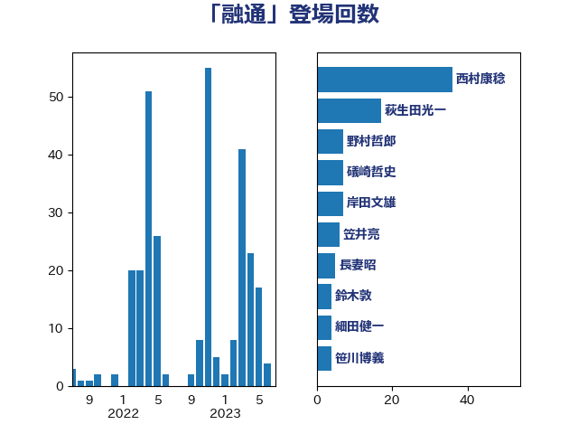

単語「融通」

| 西村康稔 | 自由民主党 | 36 回 |
| 萩生田光一 | 自由民主党 | 17 回 |
| 野村哲郎 | 自由民主党 | 7 回 |
| 礒崎哲史 | 国民民主党 | 7 回 |
| 岸田文雄 | 自由民主党 | 7 回 |
| 笠井亮 | 日本共産党 | 6 回 |
| 長妻昭 | 立憲民主党 | 5 回 |
| 鈴木敦 | 国民民主党 | 4 回 |
| 細田健一 | 自由民主党 | 4 回 |
| 笹川博義 | 自由民主党 | 4 回 |
| 山下雄平 | 自由民主党 | 4 回 |
| 加藤勝信 | 自由民主党 | 4 回 |
| 細田博之 | 自由民主党 | 3 回 |
| 徳永エリ | 立憲民主党 | 3 回 |
| 山口壯 | 自由民主党 | 3 回 |
| 吉田久美子 | 公明党 | 3 回 |
| 青木愛 | 立憲民主党 | 2 回 |
| 重徳和彦 | 立憲民主党 | 2 回 |
| 藤巻健太 | 日本維新の会 | 2 回 |
| 石川博崇 | 公明党 | 2 回 |
| 河野太郎 | 自由民主党 | 2 回 |
| 平林晃 | 公明党 | 2 回 |
| 岩渕友 | 日本共産党 | 2 回 |
| 山本太郎 | れいわ新選組 | 2 回 |
| 寺田静 | 無所属 | 2 回 |
| 宮本徹 | 日本共産党 | 2 回 |
| 大野泰正 | 自由民主党 | 2 回 |
| 堀場幸子 | 日本維新の会 | 2 回 |
| 北神圭朗 | 無所属 | 2 回 |
| 倉林明子 | 日本共産党 | 2 回 |
| 中川宏昌 | 公明党 | 2 回 |
| 高木かおり | 日本維新の会 | 1 回 |
| 須藤元気 | 無所属 | 1 回 |
| 長峯誠 | 自由民主党 | 1 回 |
| 鈴木義弘 | 国民民主党 | 1 回 |
| 鈴木俊一 | 自由民主党 | 1 回 |
| 金城泰邦 | 公明党 | 1 回 |
| 里見隆治 | 公明党 | 1 回 |
| 西田実仁 | 公明党 | 1 回 |
| 菊田真紀子 | 立憲民主党 | 1 回 |
| 菅直人 | 立憲民主党 | 1 回 |
| 芳賀道也 | 国民民主党 | 1 回 |
| 舩後靖彦 | れいわ新選組 | 1 回 |
| 舞立昇治 | 自由民主党 | 1 回 |
| 羽田次郎 | 立憲民主党 | 1 回 |
| 竹詰仁 | 国民民主党 | 1 回 |
| 窪田哲也 | 公明党 | 1 回 |
| 神谷裕 | 立憲民主党 | 1 回 |
| 石垣のりこ | 立憲民主党 | 1 回 |
| 石井苗子 | 日本維新の会 | 1 回 |
| 石井正弘 | 自由民主党 | 1 回 |
| 田村憲久 | 自由民主党 | 1 回 |
| 田村まみ | 国民民主党 | 1 回 |
| 田名部匡代 | 立憲民主党 | 1 回 |
| 田中健 | 国民民主党 | 1 回 |
| 玉木雄一郎 | 国民民主党 | 1 回 |
| 片山さつき | 自由民主党 | 1 回 |
| 武部新 | 自由民主党 | 1 回 |
| 森本真治 | 立憲民主党 | 1 回 |
| 林芳正 | 自由民主党 | 1 回 |
| 杉本和巳 | 日本維新の会 | 1 回 |
| 杉久武 | 公明党 | 1 回 |
| 斉藤鉄夫 | 公明党 | 1 回 |
| 後藤茂之 | 自由民主党 | 1 回 |
| 後藤祐一 | 立憲民主党 | 1 回 |
| 平山佐知子 | 無所属 | 1 回 |
| 岩本剛人 | 自由民主党 | 1 回 |
| 岡田直樹 | 自由民主党 | 1 回 |
| 山際大志郎 | 自由民主党 | 1 回 |
| 山田勝彦 | 立憲民主党 | 1 回 |
| 山崎誠 | 立憲民主党 | 1 回 |
| 尾辻秀久 | 無所属 | 1 回 |
| 小野泰輔 | 日本維新の会 | 1 回 |
| 守島正 | 日本維新の会 | 1 回 |
| 太田房江 | 自由民主党 | 1 回 |
| 大西健介 | 立憲民主党 | 1 回 |
| 和田有一朗 | 日本維新の会 | 1 回 |
| 吉良州司 | 無所属 | 1 回 |
| 北村経夫 | 自由民主党 | 1 回 |
| 前原誠司 | 国民民主党 | 1 回 |
| 伊波洋一 | 無所属 | 1 回 |
| 世耕弘成 | 自由民主党 | 1 回 |